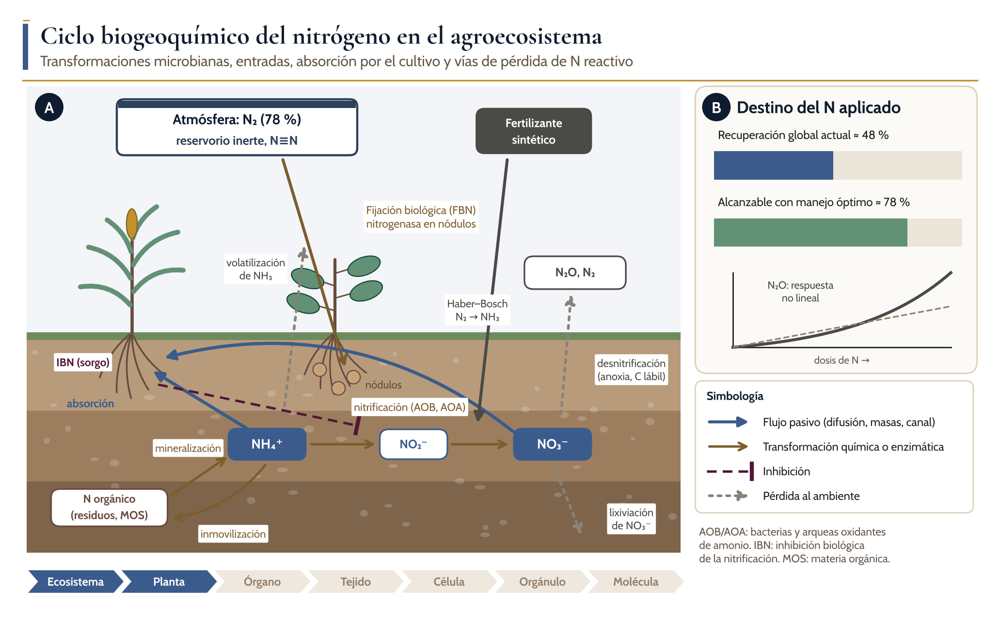
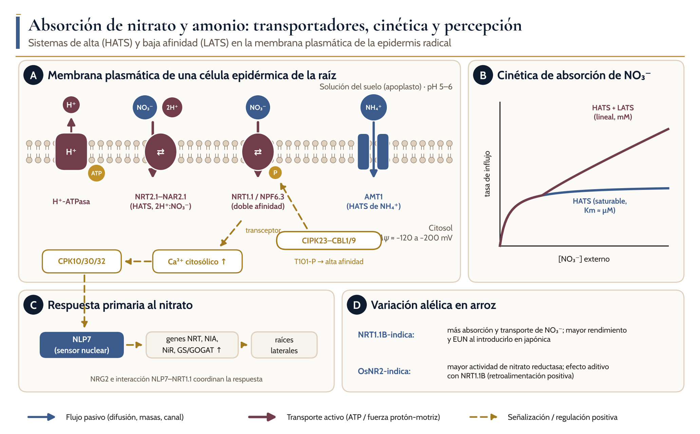
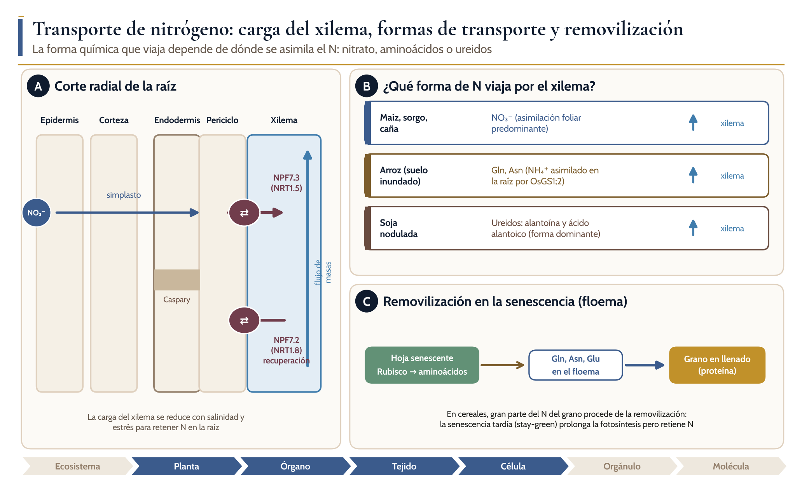
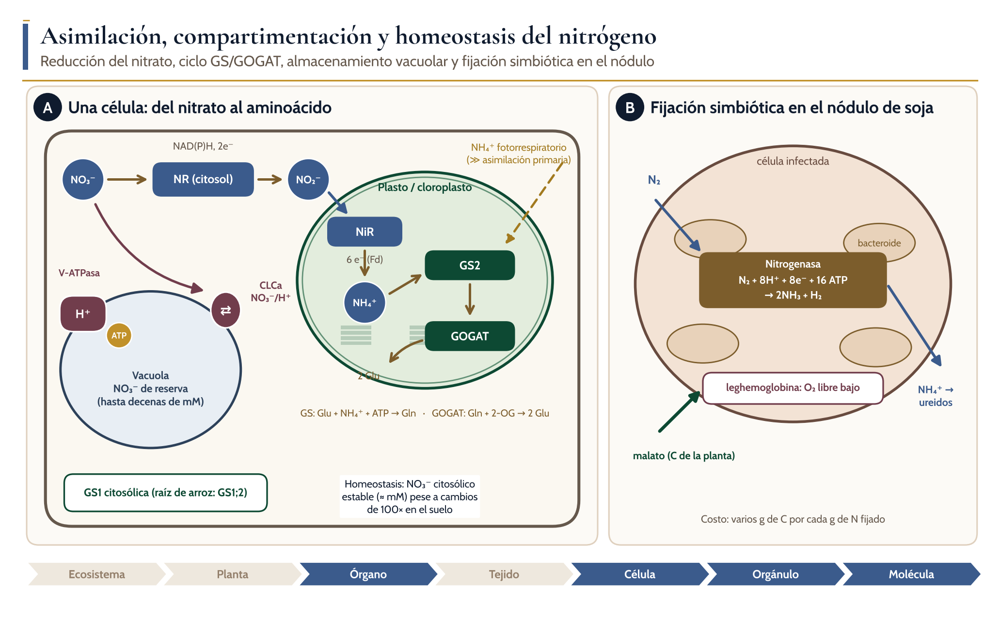
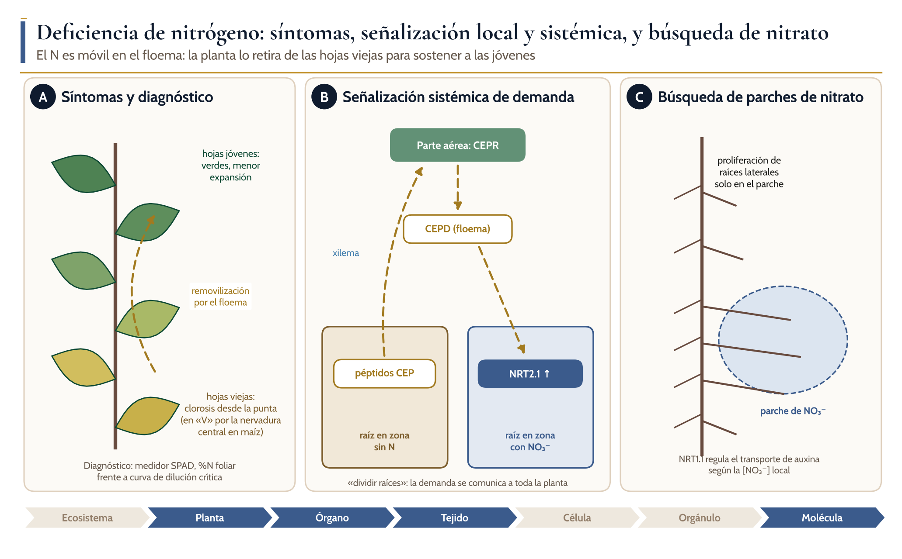
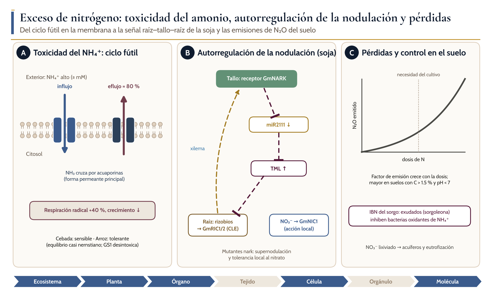

Ciclos biogeoquímicos, absorción, transporte, distribución y homeostasis del agua y los nutrientes en las plantas
N
Módulo 3. Nitrógeno
Dr. Juan Patishtan Pérez Licenciatura avanzada, maestría y doctorado · Agosto–diciembre 2026

Introducción
Objetivos de aprendizaje
El nitrógeno es el nutriente mineral que la planta necesita en mayor cantidad: representa entre 1.5 y 5 % de la masa seca y forma parte de los aminoácidos, las proteínas, los ácidos nucleicos y la clorofila. Paradójicamente, la atmósfera contiene 78 % de N₂, pero el triple enlace N≡N lo hace inaccesible para la planta. Solo dos procesos lo convierten en formas utilizables a gran escala: la fijación biológica de los microorganismos diazótrofos y la síntesis industrial de amoníaco por el proceso Haber–Bosch. El segundo sostiene hoy una fracción considerable de la producción mundial de alimentos, y también es la fuente de la mayor parte de la contaminación por N reactivo.
1Describir las transformaciones del ciclo del N (fijación, mineralización, nitrificación, desnitrificación, volatilización, lixiviación) y sus controles ambientales.
2Explicar la cinética de absorción de nitrato y amonio, y la función de NRT2.1–NAR2.1, NRT1.1/NPF6.3, AMT1 y la fosforilación por CIPK23.
3Relacionar el sitio de asimilación con la forma de N que viaja por el xilema en maíz, arroz y soja.
4Integrar la reducción del nitrato, el ciclo GS/GOGAT, el almacenamiento vacuolar y la fijación simbiótica en un modelo de homeostasis.
5Distinguir la señalización local (NRT1.1, Ca²⁺, CPK, NLP7) de la sistémica (péptidos CEP; autorregulación de la nodulación).
6Proponer prácticas que aumenten la EUN y reduzcan las emisiones de N₂O en arroz, maíz, sorgo, caña de azúcar y soja.
3.1 Ciclo biogeoquímico del nitrógeno
Ciclo del nitrógeno en un agroecosistema
Alas cajas del suelo muestran los principales compartimentos de N; las flechas pardas son transformaciones microbianas, las azules la absorción por los cultivos, las discontinuas grises las pérdidas (volatilización de NH₃, desnitrificación a N₂O y N₂, lixiviación de NO₃⁻) y la línea terminada en barra la inhibición biológica de la nitrificación por exudados del sorgo.
Brecuperación media global del N aplicado (≈ 48 %) frente al valor alcanzable con manejo óptimo (≈ 78 %), y respuesta no lineal de las emisiones de N₂O a la dosis de N.
3.1 Ciclo biogeoquímico del nitrógeno
Procesos del ciclo del N y sus controles
Proceso
Reacción
Organismos
Favorecido por
Relevancia agronómica
Fijación biológica
N₂ → NH₃ (nitrogenasa)
Rizobios, diazótrofos libres
Bajo N mineral, simbiosis activa
Fuente principal de N en soja
Mineralización
N orgánico → NH₄⁺
Heterótrofos
Humedad, temperatura, C/N < 20–25
Suministro del suelo
Nitrificación
NH₄⁺ → NO₂⁻ → NO₃⁻
AOB, AOA, oxidantes de nitrito
Aireación, pH neutro
Genera NO₃⁻ móvil y acidifica
Desnitrificación
NO₃⁻ → NO → N₂O → N₂
Heterótrofos facultativos
Anoxia, C lábil, NO₃⁻ alto
Pérdida de N y emisión de N₂O
Volatilización
NH₄⁺ → NH₃ (gas)
Química (urea vía ureasa)
pH > 7, urea en superficie, viento
Pérdidas importantes si la urea queda en superficie
Lixiviación
NO₃⁻ al agua de drenaje
Física
Lluvia intensa, suelos arenosos
Contaminación de acuíferos
3.1 Ciclo biogeoquímico del nitrógeno
● Mecanismo establecido
Concepto clave: la respuesta no lineal del N₂O
1
El factor de emisión del IPCC supone que el N₂O es una fracción fija del N aplicado. El metaanálisis de 78 estudios y 233 sitios-año mostró que la emisión crece más rápido que linealmente cuando la dosis supera la necesidad del cultivo (Shcherbak et al., 2014).
2
El aumento es mayor en cultivos fijadores, en suelos con más de 1.5 % de C y pH < 7, y cuando el fertilizante se aplica en una sola dosis anual.
3
Consecuencia: reducir las dosis excesivas tiene un efecto desproporcionado sobre las emisiones, mientras que pequeñas dosis en sistemas de bajos insumos apenas las modifican.
3.2 Absorción de nitrato y amonio
Absorción de nitrógeno en la epidermis radical

Ala H⁺-ATPasa genera la fuerza protón-motriz que impulsa al simportador NRT2.1–NAR2.1 (alta afinidad, 2H⁺:NO₃⁻) y a NRT1.1/NPF6.3, cuya afinidad depende de la fosforilación de T101 por CIPK23–CBL1/9; AMT1 introduce NH₄⁺ a favor del potencial de membrana. La percepción de nitrato por NRT1.1 eleva el Ca²⁺ citosólico y activa a las quinasas CPK10/30/32.
Bcinética de absorción con un componente saturable (HATS) y uno lineal (LATS).
Crespuesta primaria al nitrato mediada por NLP7.
Dalelos índica de NRT1.1B y OsNR2 que explican diferencias de uso de N entre subespecies de arroz.
3.2 Absorción de nitrato y amonio
● Mecanismo establecido
Variación natural útil para el mejoramiento: NRT1.1B y OsNR2 en arroz
1
La subespecie índica absorbe más nitrato que la japónica. Una variante de NRT1.1B (OsNPF6.5) explica gran parte de la diferencia: el alelo índica aumenta la absorción, el transporte a la parte aérea y la expresión de genes de respuesta al nitrato; introducido en japónica, mejoró el rendimiento y la EUN en campo (Hu et al., 2015).
2
El alelo índica de la nitrato reductasa OsNR2 tiene mayor actividad, promueve la absorción de nitrato por retroalimentación positiva con NRT1.1B y aumenta el número de macollos efectivos, el rendimiento y la EUN (Gao et al., 2019).
3
En germoplasma tailandés, el alelo A de OsNRT1.1b se asocia con mejor EUN que el alelo G (Siangliw et al., 2024).
3.3 Transporte a corta y larga distancia
Transporte de nitrógeno

Acorte radial de raíz; el nitrato cruza epidermis y corteza por el simplasto, NPF7.3 lo carga en el xilema y NPF7.2 lo recupera; el flujo de masas lo lleva a la parte aérea.
Bforma química predominante en el xilema según el cultivo.
Cremovilización en la senescencia; la Rubisco y otras proteínas foliares se hidrolizan y los aminoácidos viajan por el floema hasta el grano.
3.3 Transporte a corta y larga distancia
Transportadores y enzimas que controlan la distribución del N
Proteína
Función
Localización
Evidencia en cultivos
NRT2.1–NAR2.1
Absorción de NO₃⁻ de alta afinidad
Epidermis y corteza radical
Conservado en cereales
NRT1.1 / NPF6.3 (OsNRT1.1B)
Absorción de doble afinidad; transceptor; transporte de auxina
Epidermis, ápices radicales
Alelo índica mejora EUN en arroz
AMT1
Absorción de NH₄⁺ de alta afinidad
Epidermis radical
Importante en arroz inundado
NPF7.3 / NPF7.2
Carga y recuperación de NO₃⁻ en el xilema
Periciclo, parénquima xilemático
Ajuste con el estrés
GS1;2 (arroz)
Asimilación primaria de NH₄⁺ en la raíz
Células superficiales de la raíz
Mutantes con menos panículas
Gln1;2 (Arabidopsis)
Asimilación en hojas; desintoxicación de NH₄⁺
Parte aérea
Inducible por NH₄⁺ alto
3.4 Distribución, compartimentación y homeostasis
Asimilación y compartimentación del nitrógeno

Aen la célula, la NR citosólica reduce el nitrato a nitrito, la NiR plastídica lo reduce a amonio y el ciclo GS2/GOGAT lo incorpora a glutamina y glutamato; el amonio fotorrespiratorio se reasimila en el mismo ciclo; la vacuola almacena nitrato mediante el antiportador CLCa energizado por la V-ATPasa, y la GS1 citosólica asimila el amonio de la raíz.
Bfijación simbiótica en el nódulo de soja; la nitrogenasa del bacteroide reduce N₂ a NH₃ con 16 ATP, la leghemoglobina mantiene baja la concentración de O₂ libre, la planta aporta malato y el amonio se exporta como ureidos.
3.4 Distribución, compartimentación y homeostasis
Distribución y control del N en cada nivel de organización
Nivel
Dónde se distribuye el N
Mecanismo de control
Ejemplo en cultivos
Ecosistema
MOS, biomasa microbiana, NH₄⁺, NO₃⁻
Mineralización, nitrificación, pérdidas
IBN del sorgo; arroz inundado con NH₄⁺
Planta
Hojas (vegetativo), grano (madurez)
Removilización por el floema
Índice de cosecha de N en maíz
Órgano
Raíz o parte aérea según el sitio de asimilación
Carga del xilema (NPF7.3/NPF7.2)
Ureidos en soja; Gln en arroz
Célula
Citosol (estable) y vacuola (reserva)
CLCa, V-ATPasa, NR
Nitrato vacuolar en hojas de maíz
Orgánulo
Cloroplasto: NiR, GS2/GOGAT, Rubisco
Reasimilación fotorrespiratoria
Mayor en arroz y soja (C3)
Molécula
Gln y Glu como donadores de grupos amino
GS1/GS2, GOGAT; NLP7
OsGS1;2 y OsNR2 en arroz
3.5 Funciones del nitrógeno en la planta
Funciones del nitrógeno y el proceso en que intervienen
Función
Moléculas o procesos
Importancia agronómica
Proteínas y enzimas
Aminoácidos; Rubisco (gran fracción del N foliar)
Capacidad fotosintética; proteína del grano de soja
Clorofila
Cuatro átomos de N por molécula
Color verde; base del diagnóstico con SPAD
Ácidos nucleicos
Bases nitrogenadas de ADN y ARN
División celular y crecimiento
Hormonas y señales
Citocininas, auxina (vía triptófano), NO
Macollamiento, desarrollo radical
Transporte y reserva
Gln, Asn, ureidos; nitrato vacuolar
Removilización al grano
Osmorregulación
Nitrato vacuolar, prolina, glicina betaína
Ajuste osmótico ante sequía y salinidad
Defensa
Alcaloides, glucosinolatos, proteínas de defensa
Compromiso entre crecimiento y defensa
3.6 Deficiencia, exceso y toxicidad
Deficiencia de nitrógeno

Agradiente de síntomas desde las hojas viejas (clorosis) a las jóvenes, resultado de la removilización por el floema, y herramientas de diagnóstico.
Bseñalización sistémica de la demanda de N; los péptidos CEP producidos en raíces sin N viajan por el xilema al receptor CEPR de la parte aérea, que envía señales (CEPD) por el floema para aumentar NRT2.1 en las raíces con nitrato.
Cproliferación de raíces laterales en un parche de nitrato, regulada por NRT1.1.
3.6 Deficiencia, exceso y toxicidad
? Hipótesis o debate
Debate: ¿cuál es la causa primaria de la toxicidad del amonio?
1
El ciclo fútil explica el costo energético, pero no todas las especies sensibles lo muestran con la misma intensidad.
2
La desintoxicación por GS (Gln1;2 en hojas, GS1;2 en raíces de arroz) indica que la capacidad de asimilar el NH₄⁺ es tan importante como la de excluirlo (Guan et al., 2016).
3
Probablemente la toxicidad es multicausal y su peso relativo depende de la especie, del pH y de la concentración de K⁺ y de C disponible.
3.6 Deficiencia, exceso y toxicidad
Exceso de nitrógeno

Aciclo fútil de amonio en la membrana plasmática de raíces sensibles; el eflujo alcanza 80 % del influjo y la respiración aumenta 40 %.
Bautorregulación de la nodulación en soja; los péptidos CLE inducidos por los rizobios (GmRIC1/2) viajan por el xilema al receptor GmNARK del tallo, que reduce la producción de miR2111; al bajar miR2111 aumenta TML en la raíz y se inhibe la formación de nuevos nódulos; el nitrato actúa localmente mediante GmNIC1.
Crespuesta no lineal del N₂O a la dosis de N, inhibición biológica de la nitrificación por el sorgo y lixiviación de nitrato.
3.6 Deficiencia, exceso y toxicidad
Contraste entre deficiencia y exceso de nitrógeno
Aspecto
Deficiencia
Exceso
Síntoma visual
Clorosis de hojas viejas; «V» en maíz
Verde oscuro, follaje abundante, acame
Señal
CEP–CEPR (sistémica); NRT2.1 ↑
NH₄⁺ alto: ciclo fútil; NO₃⁻ inhibe nodulación
Efecto en rendimiento
Menos macollos, granos y proteína
Acame, enfermedades, retraso de madurez
Efecto en calidad
Menos proteína en grano
Menos sacarosa en caña; nitrato en forrajes
Efecto ambiental
Minado del N del suelo
Lixiviación de NO₃⁻; N₂O, NO y NH₃
3.7 Respuestas adaptativas y regulación
? Hipótesis o debate
Debate: ¿puede la IBN sustituir a los inhibidores sintéticos?
1
La IBN es un rasgo heredable y no agrega insumos, pero su efecto depende del genotipo, la etapa de crecimiento, el pH y la comunidad microbiana.
2
Las arqueas oxidantes de amonio, dominantes en suelos ácidos, parecen insensibles a los exudados del sorgo.
3
Se requieren ensayos de campo de varios años que midan a la vez nitrificación, N₂O, lixiviación y rendimiento.
3.7 Respuestas adaptativas y regulación
Estrategias frente a la deficiencia y el exceso de N
Estrategia
Rasgo
Mecanismo
Evidencia
Absorción eficiente
Alelo índica de NRT1.1B
Más absorción y transporte de NO₃⁻
Arroz japónica mejorado
Asimilación eficiente
Alelo índica de OsNR2
Mayor actividad de NR; retroalimentación con NRT1.1B
Más macollos y EUN
Búsqueda de N
Proliferación radical en parches
NRT1.1 y auxina; señal CEP
Raíces de maíz
Simbiosis regulada
Autorregulación de la nodulación
CLE–NARK–miR2111–TML
Soja, frijol
Conservar N en el suelo
IBN
Sorgoleona y otros exudados inhiben AOB
Sorgo
Tolerancia al NH₄⁺
Equilibrio casi nernstiano; GS1
Evita el ciclo fútil
Arroz
3.8 Implicaciones agronómicas
Comparación de los cinco cultivos de referencia frente al nitrógeno
Cultivo
Forma de N dominante
Etapa crítica
Riesgo principal
Manejo clave
Arroz
NH₄⁺ (suelo inundado)
Macollamiento y primordio floral
Volatilización de urea; desnitrificación en alternancia de humedad
Urea incorporada o en dosis divididas; fertilizante de liberación controlada
Maíz
NO₃⁻
V6–VT y llenado
Lixiviación y N₂O por dosis excesivas
Dosis según rendimiento esperado y sensores; fraccionar
Sorgo
NH₄⁺ y NO₃⁻ (IBN)
Diferenciación de panícula
Deficiencia en suelos pobres
Aprovechar la IBN; rotación con leguminosas
Caña de azúcar
NO₃⁻
Macollamiento y gran crecimiento
Exceso retrasa la maduración
Dosis moderadas; evitar N tardío
Soja
N₂ fijado + N del suelo
Llenado de vainas (R5–R6)
Brecha de N en alto rendimiento
Inoculación; N profundo o tardío solo si el rendimiento > 4.5 t ha⁻¹
3.8 Implicaciones agronómicas
▲ Para el agrónomo
Para el agrónomo: cinco decisiones que dependen del nitrógeno
1
1. Dosis: ajustarla al rendimiento alcanzable y al N del suelo; el exceso aumenta las emisiones de N₂O de forma no lineal.
2
2. Momento: fraccionar para que el suministro coincida con la demanda (macollamiento en arroz, V6–VT en maíz).
3
3. Fuente y colocación: incorporar la urea en arroz y en suelos alcalinos para evitar la volatilización.
4
4. Diagnóstico: usar SPAD, sensores de dosel o %N foliar frente a curvas de dilución para decidir dosis complementarias.
5
5. Rotación: incluir soja u otras leguminosas y aprovechar la IBN del sorgo para reducir el N sintético.
Cierre
Síntesis
01
El N es el nutriente mineral más demandado; la atmósfera es su gran reservorio, pero solo la fijación biológica y la industrial lo hacen disponible.
02
Las transformaciones microbianas determinan si el N está como NH₄⁺ o NO₃⁻ y cuánto se pierde; la recuperación media global es de 48 %, con potencial de llegar a 78 %.
03
NRT2.1–NAR2.1, NRT1.1/NPF6.3 (regulado por CIPK23) y AMT1 controlan la absorción; NRT1.1 y NLP7 perciben el nitrato y desencadenan la respuesta primaria.
04
La forma que viaja por el xilema depende del sitio de asimilación: nitrato en maíz, sorgo y caña; glutamina y asparagina en arroz; ureidos en soja.
05
El ciclo GS/GOGAT incorpora el NH₄⁺ de la reducción del nitrato, de la fotorrespiración y de la fijación simbiótica; las isoformas GS1 tienen funciones específicas.
06
La autorregulación de la nodulación, la toxicidad del amonio y la IBN del sorgo muestran que la planta regula activamente cuánto N adquiere y en qué forma.
Autoevaluación
Preguntas de autoevaluación
1Un maíz recibió 200 kg N ha⁻¹ y absorbió 96 kg N ha⁻¹ del fertilizante. Calcule la EUNr y compárela con la media global. ¿Qué prácticas propondría?
2Explique por qué la absorción de nitrato consume más energía que la de amonio, y por qué, aun así, muchas especies crecen mejor con nitrato.
3Diseñe un experimento con raíces divididas para demostrar la señalización sistémica de la demanda de N.
4Prediga el fenotipo de una soja mutante nark cultivada con 5 mM de nitrato. Justifique con el modelo CLE–NARK–miR2111–TML.
5¿Por qué la emisión de N₂O aumenta de forma no lineal con la dosis? Relacione su respuesta con la desnitrificación y con el N que el cultivo no absorbe.
Fuentes verificadas
36
referencias verificadas: artículos con DOI, consultados en bases bibliográficas, y libros de texto. La lista completa, con autores, año, revista y enlace, está en el manual del módulo.